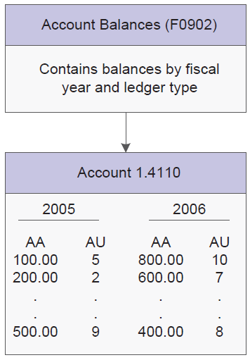
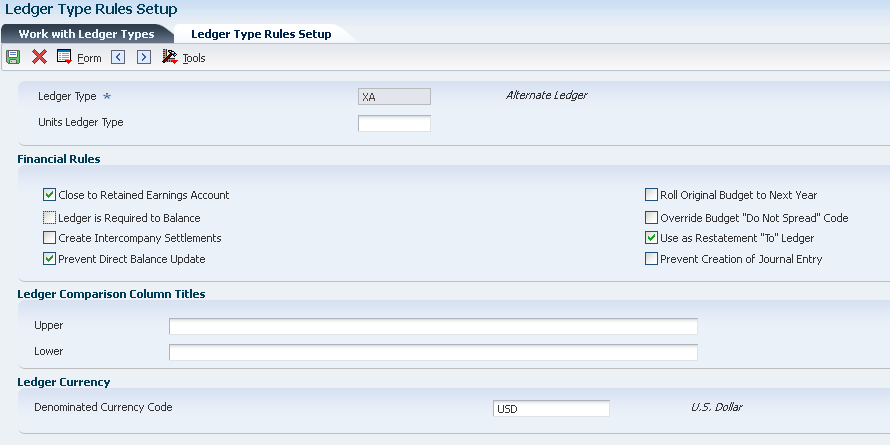
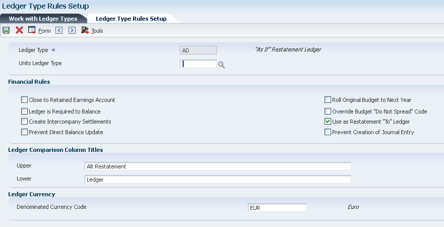

Your general ledger includes different types of ledgers that contain management and control information used:
For Statistical purposes.
To Track units.
To Maintain budgets and forecasts.
To Control the annual close.
To Track Accrual and Cash basis amounts.
You can set up multiple concurrent accounting ledgers in the EnterpriseOne General Accounting system to establish an audit trail for all transactions. Multiple ledgers provide flexibility without requiring you to enter unnecessary and redundant data. Multiple ledgers allow you to:
Define any number of unit or monetary ledger types, such as actual, budgeted, or non-domestic currency.
Retrieve data about anything, from global revenue by product to an individual employee's expenses, without creating separate account numbers.
Maintain transactions in the appropriate ledger and post to the general ledger by summary or detailed transaction.
View two ledgers simultaneously. For example, you can view the domestic and reporting currency ledgers, or the budget and actual ledgers, with the variance calculated online.
Example
Some of the common ledger types in the EnterpriseOne General Accounting system include:
AA (Actual Amounts)
AU (Actual Units)
BA (Budget Amounts)
BU (Budget Units)
CA (Foreign Currency Amounts)
XA (Alternate Currency)
AC (Consolidations Amount)
NOTE: You can also create additional ledger types. Ledger types U1 - U9 and UA - UZ are provided for your business needs. These ledger types are for your use only and will not be overwritten or used for other purposes in future releases of EnterpriseOne software.
Scope
This document is intended for Finance Functional users who will be involved in setting up the General Accounting system.
Details
Setting up Ledger Types (P0025)
You must set up each ledger type in the User Defined Code table 09/LT..
The rules that you set up are consolidated on one form which you access from Ledger Type Master Setup (P0025).
The financial rules for ledger types are stored in the Ledger Type Master File (F0025).
Access the Ledger Type Rules Setup form.
Units Ledger Type
Enter a value for Units Ledger Type.
The system associates a units ledger with each primary amount ledger.
The first character in both ledgers is the same. The second character in the units ledger is a U. For example, the AU ledger is the units ledger that is associated with the AA ledger and the BU ledger is the units ledger that is associated with the BA ledger.
You can set up a units ledger to be used with any of the ledgers that you set up in UDC 09/LT. However, unit ledger types FU, HU, and IU can be used only with the FA, HA, and IA ledgers, respectively. For example, you cannot set up an FX ledger for actual amounts and use it with the FU ledger for units.
NOTE: The one exception to this is the AZ (Cash Basis) amount ledger. If you do not fill in a units ledger for the AZ amount ledger, a default units ledger of ZU will be used by the G/L Post. The units ledger must be a valid ledger type.
When you enter a journal entry that has units, the system does not create an additional record in the F0911 table, it merely stores the units in a separate field. However, when you post a journal entry that has units, the system creates a separate F0902 record that it uses to record the units in the units ledger that is associated with the amount ledger. For example, the system posts the amounts to the AA ledger and posts units to the AU ledger.
Following graphic illustrates how the F0902 table separates ledger types for actual amounts (AA) and actual units (AU) for each fiscal year:

Close to Retained Earnings Account
Select this option to denote that retained earnings should be calculated for this ledger during the Annual Close.
This flag must be selected for the AA and AZ ledgers.
This option specifies whether the Annual Close program (R098201) <Document 664688.1> closes accounts in this ledger to a retained earnings account.
Ledger is Required to Balance
Select this option if entries for this ledger must be in balance (net to zero).
This flag must be selected for the AA, CA and AZ ledgers.
Do not turn this on for the XA, YA and ZA ledgers. The G/L Post program will not check that these ledgers are in balance. The ledgers should be in balance by batch but not necessarily by document.
Unlike the Create Intercompany Settlements check box, this check box does not ensure that companies within this ledger are in balance. This check box ensures only that entries for this ledger are in balance.
Create Intercompany Settlements
Select this check box if you want the system to create balancing entries when a transaction that involves multiple companies is entered for this ledger.
If you select this option, you must also select "Ledger is Required to Balance" option.
This check box works in conjunction with the intercompany settlement method General Accounting Constants (P0000) on the General Accounting Constants (P0000) form:
If this check box is selected, the system validates that entries for this ledger are in balance by company when posted. If companies are out of balance, the system uses the intercompany settlement method to bring them into balance.
If this check box is selected and the intercompany settlement method is set to N i.e. no intercompany transactions, the system will not post a transaction that involves multiple companies if those companies are out of balance.
If this check box is not selected, the system will not validate that companies within this ledger are in balance.
You must select this flag for the AA, CA and AZ ledgers.
Do not select this for the XA, YA and ZA ledgers.
Prevent Direct Balance Update
Select this check box to prevent users from entering amounts directly in the Account Balances table (F0902) for this ledger.
You must select this check box for ledger types AA, CA, and AZ ledgers, otherwise the system displays an error message.
If an amount ledger has a unit ledger associated with it, the check box value for the unit ledger type must be the same as the amount ledger.
If you turn off this option, you can update account balances in the F0902 table. For example, if you are entering amounts for ledger type BA, you will turn off this option so that you can enter amounts using the budget programs and then when finished, you might turn on this option to prevent future updates to the F0902 table.
You must select this check box for the AA ledger type so that users cannot access a budget program to update account balances, for example, change the ledger type, and change the account balances. However, you might not want to select this check box for the AC ledger because the Compute Restated Balances program (R11414A) directly updates this ledger.
Roll Original Budget to Next Year
For budget ledger types, select this check box to designate that the original budget can be rolled forward in the Annual Close program.
For budget ledger types, select this check box for the Spread Annual to Periods program (R14801) to override the Do Not Spread (DNS) code and evenly distribute annual budget amounts among the periods for accounts that are assigned the DNS code.
If this check box is not selected, the R14801 program does not distribute annual budget amounts for accounts that are assigned the DNS code. You must distribute the amounts manually.
Use as Restatement "To" Ledger
A flag to denote that this ledger can be used as a restatement 'To' ledger.
This flag can not be selected for AA, CA, and AZ ledgers.
Prevent Creation of Journal Entry
Select this check box to specify whether the system should prevent journal entries from being created for this ledger.
If you turn on this option and try to create a journal entry for this ledger type, the system issues the error message "Cannot create JE for Ledger Type".
Ledger Comparison Column Titles Upper
Enter the first line of description used in column headings on a report or form.
This description should be no larger than the data item size of column heading, if possible.
If the column heading is only one line, it should be placed in this column.
Use the second line of the Column Title when one is not sufficient.
Ledger Comparison Column Titles Lower
Enter the second line of description used in column headings on a report or form.
This description should be no larger than the data item size of column heading, if possible.
If the column heading is only one line, it should be placed in the first column.
Denominated Currency Code
Specify the code that indicates the currency in which an amount is denominated.
The currency code in this field applies to all companies that use the ledger.
Applications like R09110Z and P0911 will not allow transactions in foreign currency other than Denominated Currency Code.
Ledger types AC, AD, XA, and ZA require a currency code to ensure that amounts are restated only in the designated currency and that the amounts have the correct number of decimal places.
NOTE: To maintain the integrity of the ledgers, do not change the currency code that you assign to them after you begin using detailed currency restatement.
Multicurrency Ledger Types
When you work with multiple currencies, the system uses ledger types AA (actual amounts) and CA (foreign currency amounts) and, optionally the following restatement ledger types:
XA: Detailed currency restatement
YA: Detailed currency restatement
ZA: Detailed currency restatement
AC: Balance restatement
AD: As if restatement
Ledger Types for Detailed Currency Restatement
To perform Detailed Currency Restatement, the system uses the XA, YA, and ZA ledger types. You must set up the alternate currency (XA) ledger for Detailed Currency Restatement and, optionally, the domestic origin (YA) and foreign origin (ZA) ledgers. The Detailed Currency Restatement program is designed to use only these ledgers.
Prerequisites
Ensure that the XA, YA, and ZA ledger types are set up in UDC table 09/LT.
The ledgers can be currency specific by entering the currency code as left justified and capitalized in the Special Handling Code column:
XA: Assign the alternate currency code to this ledger
ZA: Assign the alternate currency code to this ledger
YA: Do not assign a currency code
The XA, YA, and ZA ledgers, which are hard coded, are described in the following table:
Ledger Type
Description
XA (alternate currency)
This ledger is required and contains a partial or complete chart of accounts with transactions in the alternate currency. The alternate currency of the XA ledger is typically a currency that does not fluctuate as compared with the domestic currency of a company. Each transaction in the AA ledger is restated into its alternate currency (XA) equivalent by using the exchange rate that is effective on the date of the transaction. The exception to this is when amounts in the foreign currency ledger (CA) are in the same currency as the XA ledger. In this case, the program copies the CA ledger amounts to the XA ledger; it does not restate the AA amounts.
Assign the currency code of the alternate (stable) currency to ledger type XA. This must be the same currency code as company 00000.
If you do not set up this ledger and run the Detailed Currency Restatement program (R11411), the system exits the program without processing records.
YA (domestic origin)
This ledger is optional and contains a partial chart of accounts with transactions that originated in the domestic currency (AA ledger), restated into the alternate ledger (XA).
Do not assign a currency code to this ledger type. The system uses the domestic currency of the company on the transaction.
This ledger is typically used for analysis purposes and shows the amount of the XA ledger that was created by original domestic transactions.
ZA (foreign origin)
This ledger is optional and contains a partial chart of accounts with transactions that originated in the foreign currency (CA ledger), restated into the alternate ledger (XA).
Assign the currency code of the alternate currency to ledger type ZA. (This must be the same currency code assigned to the XA ledger.)
This ledger is typically used for analysis purposes and displays the amount of the XA ledger that was created by original foreign transactions.

Close to Retained Earnings and Account and Ledger is Required to Balance
Select these check boxes for ledger type XA, YA, and ZA only if you restate the entire chart of accounts.
Use as Restatement To Ledger
This check box does not apply to ledger types XA, YA, and ZA. The detailed currency restatement program is hard-coded for ledger types XA, YA, and ZA; therefore, this option is ignored by the system.
Denominated Currency Code
Enter the currency code in which to restate the domestic AA ledger. Complete this field for ledger types XA and ZA only. A currency code designation for a ledger type applies to all companies using that ledger
If you use ledger type ZA, you must assign it the same currency code as ledger type XA. Ledger type ZA contains the foreign entries that were restated into the XA ledger; therefore the currency code must be the same.
Ledger type YA does not use this field because amounts are restated in the currency of the domestic AA ledger.
NOTE: To maintain the integrity of your ledgers, do not change the currency code that you assign to them after you begin using detailed currency restatement (R11411). For more information on R11411, refer to Overview of Detailed Currency Restatement Method.
Ledger Types for Balance Currency Restatement
You can set up ledger type AC or any user-specified ledger type for balance restatement (R11414A). You cannot use ledger type AC for detailed currency restatement or “as if” currency repost.
This ledger contains a partial or complete chart of accounts with transactions in the reporting currency. Assign the currency code of the consolidated reporting currency to ledger type AC. Although ledger type AC is commonly used, the consolidation ledger type can be any user-specified ledger type.
NOTE: Ensure that ledger type AC (consolidation ledger) or other user-specified ledger type for balance restatement exists in both UDC 09/LT and UDC 11/TL.
Close to Retained Earnings Account
Select this check box if you restate the entire chart of accounts for ledger type AC.
Use as Restatement To Ledger
Select this check box.
Prevent Creation of Journal Entry
Clear this check box.
Denominated Currency Code
Enter the code of the currency in which you restate amounts in this field. A currency code designation for a ledger type applies to all companies using that ledger.
Ledger type AC requires a currency code to ensure that amounts are restated only in the designated currency and that the amounts have the correct number of decimal places.
To maintain the integrity of the AC ledger, do not change the currency code that you assign to the ledger after you begin using balance restatement.
You must set up the ledger type AD for “as if” restatement. You cannot use this ledger type for detailed currency restatement or balance restatement.
This ledger contains a complete chart of accounts with domestic transactions (AA ledger) that have been restated to foreign amounts using exchange rates as of a specific date.
NOTE: Ensure that ledger type AD (as if restatement ledger) exists in both UDC table 09/LT and UDC table 11/TL.

Use as Restatement To Ledger
Select this check box.
Prevent Creation of Journal Entry
Clear this check box.
Denominated Currency Code
Enter the currency in which you restate amounts in this field. A currency code designation for a ledger type applies to all companies using that ledger.
Ledger type AD requires a currency code to ensure that amounts are restated only in the designated currency and that the amounts have the correct number of decimal places.
To maintain the integrity of the ledger, do not change the currency code that you assign to the AD ledger after you begin using as if restatement.
Frequently Asked Questions
Question 1: What are the best practices recommended for creating custom ledger types?
Answer 1: Please consider the following recommendations while creating custom ledger types:
You must first set up each ledger type in the UDC 09/LT.
After you have added a ledger type in the UDC 09/LT, it will be required to add the ledger type in Work with Ledgers (P0025) application.
You can use ledger types U1 - U9 and UA - UZ which have been provided for your business needs. These ledger types are for your use only and will not be overwritten or used for other purposes in future releases of EnterpriseOne software.
Avoid setting up ledger types starting with 'B' or 'J' as these are reserved for budgeting in general ledger and jobcost modules and can be misunderstood as budgeted and jobcost amounts.
Question 2: When I try to change "Prevent Direct Balance Update" option on a ledger type, why does it throw "Invalid Value" error?
Answer 2: This error could be thrown for following possible reasons:
It is mandatory to select this option for ledger types AA, CA, and AZ ledgers. In case the option is unchecked, the system displays an error message.
If an amount ledger has a unit ledger associated with it, the option for the unit ledger type must match the setting for the amount ledger. For instance, HA is the Amount ledger type and HU is the associated Unit Ledger type. If you select the option for “Prevent Direct Balance Update” on the HA ledger, it will be required to first select the same option on the HU unit ledger type. Similarly, if you decide to uncheck this option for HA ledger type, it will be required to first uncheck the option on the HU ledger type.
Question 3: When I try to check "Create Intercompany Settlements" option on a ledger type, why does it throw "Invalid Value" error?
Answer 3: If you select this option, you must also select "Ledger is Required to Balance" option. If this is not selected, it will throw "Invalid Value" error.
Question 4: When posting a foreign transaction between two companies with different currencies, what amounts are posted to the AA and the CA ledgers by the Post?
Answer 4: The AA ledger will always be posted in the currency of the companies and the CA ledger will be posted in the currency of the transaction.
Question 5: After adding the ledger type in P0025, the ledger description had been updated in UDC 09/LT. How to re-update the ledger description in F0025?
Answer 5: To update the ledger description in F0025:
Open P0025 application and select the ledger type in update mode.
Click OK to re-save. This will update the Ledger Description in F0025 based on the setup in UDC 09/LT.
Question 6: Why is the "Ledger Type invalid" error thrown when trying to add a custom ledger type with custom Units Ledger Type?
Answer 6: Units Ledger Type must be a valid value in the F0025 table so prior to adding custom ledger type, make sure the associated units ledger type is added to the F0025 and if not, use P0025 for input and flag Prevent Direct Balance Update for the custom unit ledger type.
Question 7: If I make an update to an existing ledger or add a new ledger to the Ledger Type Master (P0025), will the change be effected immediately?
Answer 7: The Ledger Type Rules (F0025) are cached values stored in both Database Caching and Service Cache. So it will be required to refresh the cache for the changes to take effect:
On fat client, signing off and signing back in will help to reset the cache.
On web client, it will be required to explicitly reset the cache apart from signing off and signing back in.
Question 8: Receiving the following error when trying to set the BA ledger to prevent direct balance update in P0025.
Answer 8: When user try to change the “Prevent Direct Balance Update” flag for BA ledger then system will check if Units ledger is entered, the flag for Units Ledger “Direct Balance update” must be set the same as for this BA amount ledger. System will display an error if flag “Prevent Direct Balance Update” is different in BA ledger and Units ledger.
By selecting the “Prevent Direct Balance Update” flag for BU units ledger I could able to change the “Prevent Direct Balance Update” flag for BA ledger type.
Question 9: Why "Ledger is Required to Balance" option is not mandatory for the XA ledger?
Answer 9: The XA ledger is set to not allow "ledger is required to balance" because detail currency restatement uses the CR01-CR02 etc AAI's. If an entry is made to an account that is not in the range then it will be out of balance and this is incorrect.
Per the current design, the Work with Ledger Types (P0025) application checks all CR01 and CR02 account ranges against the GLG2 and GLG12 account ranges. If they are the same, the "Ledger is Required to Balance" checkbox can be turned on for XA, YA, and ZA ledgers. If they are not the same, then an error will be reported. Simulatenously, Work with AAIs (P0012) application checks the flag being checked/unchecked in Ledger Types Master (F0025) table for XA, YA, and ZA ledger types. If it is checked for one of those ledger types, and a user is adding or changing a CR01 or CR02 AAI, the account ranges for CR01 and CR02 will be checked against the GLG2 and GLG12 AAI account range.
Question 10: Can settings in P0025 be company specific or is it a global setting?
Answer 10: Per the current design this is a global setting in P0025 and cannot be per company